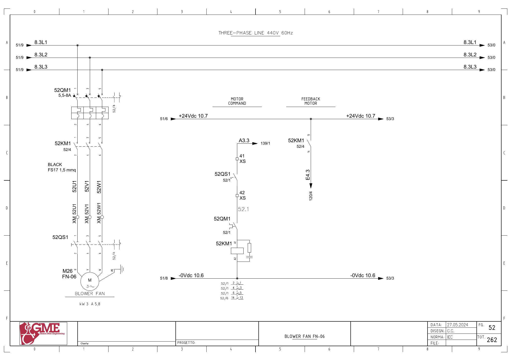

FN06 · 보조 블로어 전기 회로 추적
원본 전기도면을 시각 확인한 정적 회로 해석입니다. 현재 배선·입력 극성·파라미터와 현장 측정은 미확인입니다. 전기 작업은 승인된 현장 절차와 자격 범위에서 수행합니다.
1. 도면의 구성과 진단 경계
FG52: M26 FN-06(도면3kW·5.8A), 52QM1·52KM1·52QS1의 직접 기동 회로입니다.
인버터 고장 입력이 별도로 식별된 회로가 아닙니다. 접촉기 피드백 없음, 차단기·개폐기 상태, RD01 연동 정지를 구분합니다.
추가 시공도면 · 접속함·케이블·배관 경로 — 승인·현재 설치는 확인 전입니다.
2. 기동 명령
A3.3 ↔ 백업 %Q3.3 / start fn06 · FG52 · PDF 53
- A3.3 (FG139/1)
- XS:41 → 52QS1 보조접점 → XS:42
- 52QM1 보조접점
- 52KM1 코일 A1→A2 / 0Vdc10.6
전달·사용 위치: 원본1955의 요청과 RD01 운전 응답 연동,1802의2초 감시를 연결합니다. 고장 내부 이름은Allarm.MBVA01_FAULT입니다.
진단 판단: PLC 요청 해제 원인과 출력 이후 접촉기 기동 실패를 구분합니다. 다른 인버터의 Fault 입력을 임의로 연결하지 않습니다.
원본 심볼 직접 참조: 1802 / allarms 1 / ORef 830 · 1955 / motors 1 / ORef 783
3. 접촉기 응답
E4.3 ↔ 백업 %I4.3 / fn06_fbk · FG52 · PDF 53
- +24Vdc10.7 → 52KM1 보조접점13→14
- E4.3 → FG120/4
전달·사용 위치: 원본1802의 내부 Inputs.FeedbackMotor FN-06과 Allarm.MBVA01_FAULT를 추적합니다. 물리→DB 전달은 미확정입니다.
진단 판단: 접촉기 응답, 모터 회전·풍량·기계부 정상 여부를 분리해 관찰합니다.
원본 심볼 직접 참조: 1032 / time work motor / ORef 1882
위 직접 참조는 복원 원본의 같은 심볼명 위치입니다. 읽기·쓰기 역할, 현재 호출, 현장 사용을 함께 확정한 표는 아닙니다. 원본의 simulation 블록 참조가 있더라도 이번 작업에서 가상 실행·개발·시험은 진행하지 않았습니다.
원본 PLC와 연결
남은 확인과 기록
- MBVA01 고장 명칭·HMI 문구와 FN06 실물 대응 확인
- RD01 정지·냉각·운전 연동 정책과 현재 응답 전달 확인
도면을 함께 확인
FG 52 · 해당 도면 보기

| 기록 항목 | 내용 |
|---|---|
| 현장 식별 | 설비 ID / 반·단자대 / 모터·인버터 명판 / 도면 개정 |
| 신호 구간 | PLC 명령 / 단자 / 직렬 접점 / 릴레이 / DI / 응답 접점 / 입력 / 내부 DB |
| 관찰 결과 | 시각 / 운전 모드 / 기준값의 근거 / 관찰값 / 최초 불일치 구간 |
| 복구 확인 | 원인·조치 / 원인 해제 / Reset / 재요청 / 주변 설비 영향 |